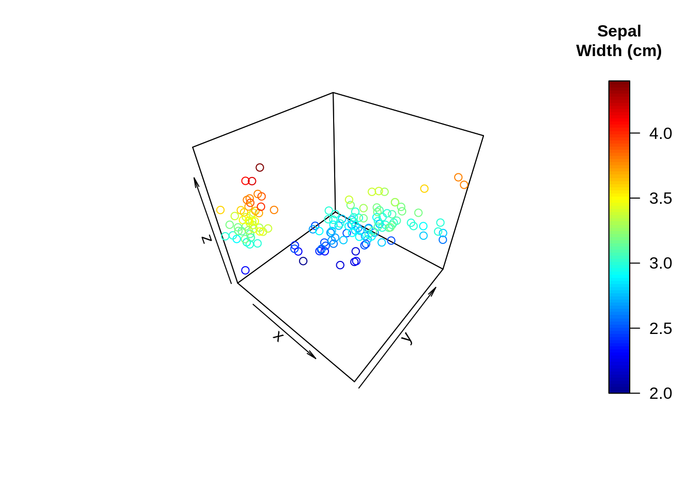
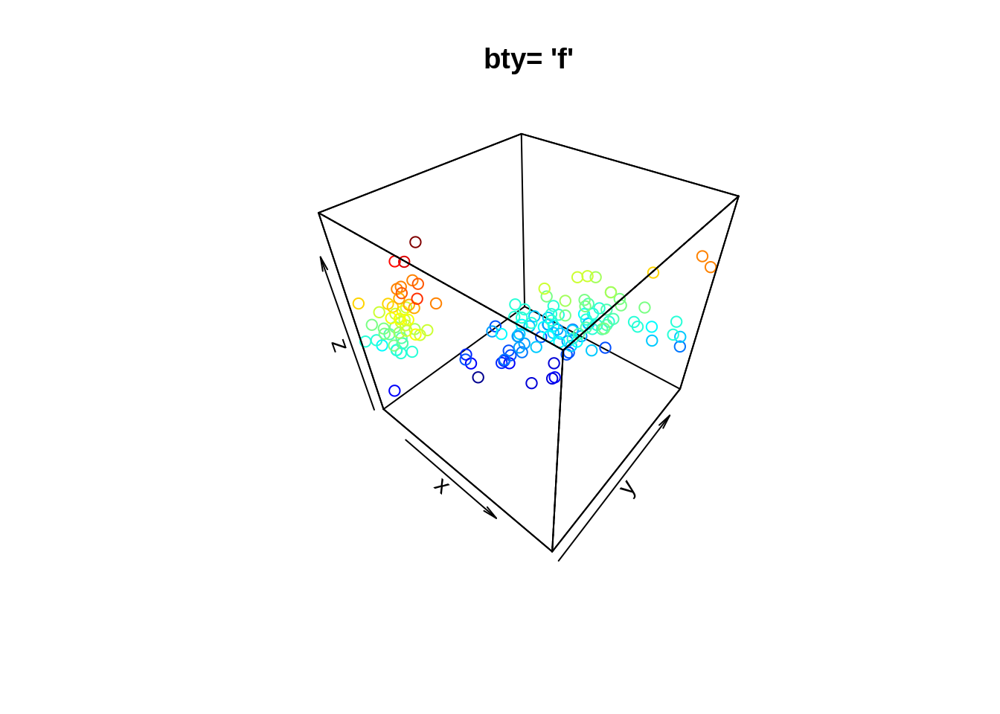
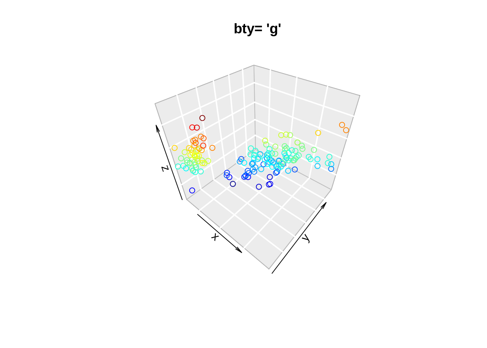
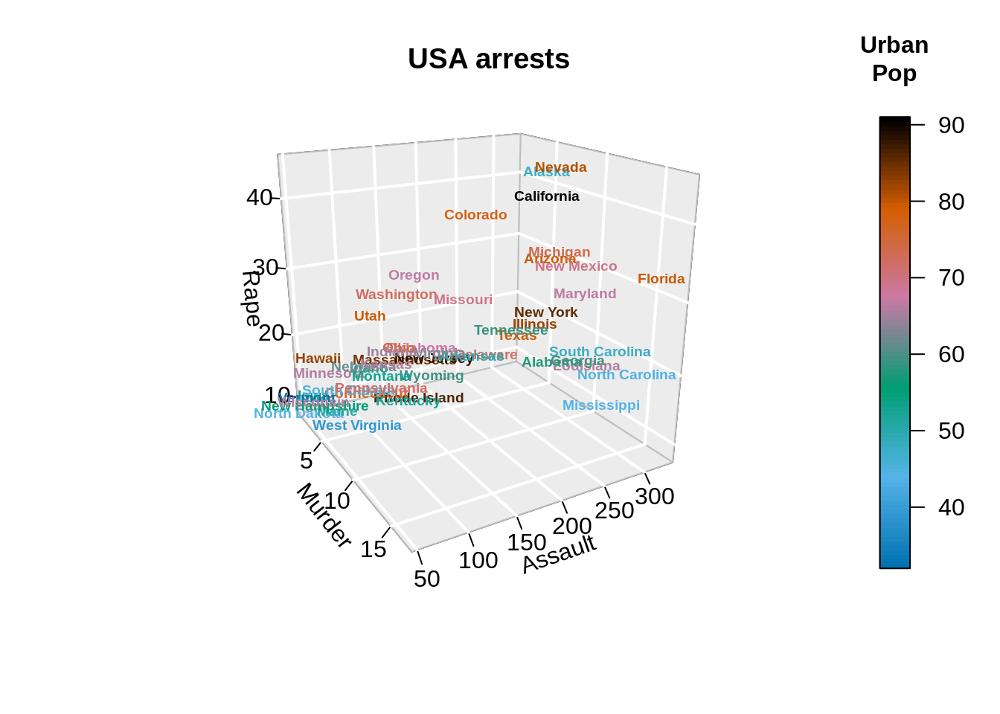
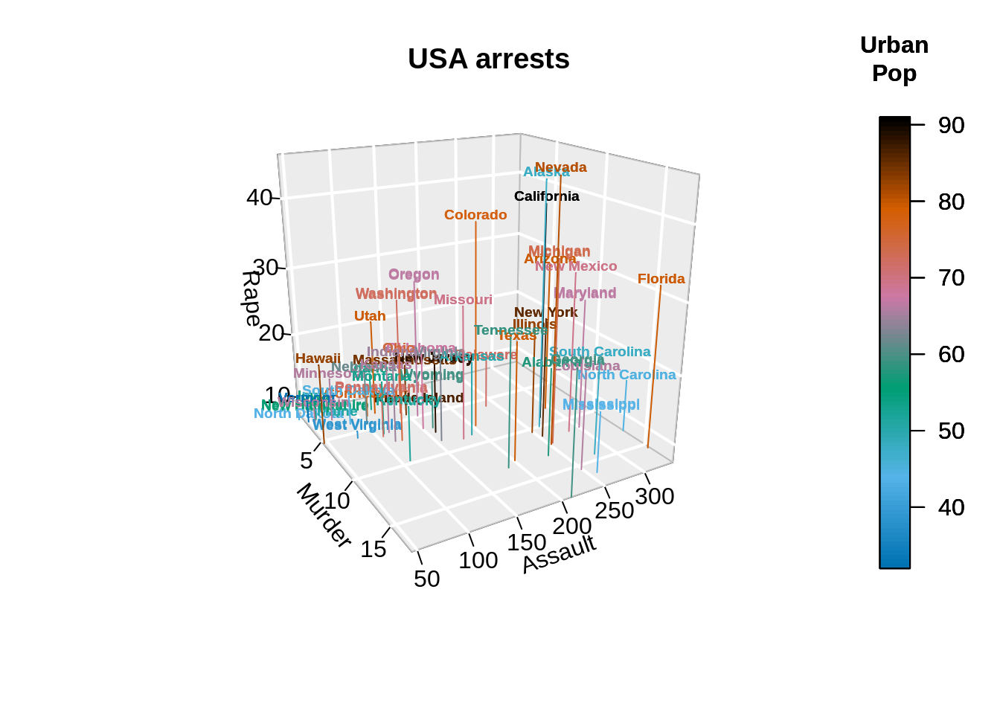
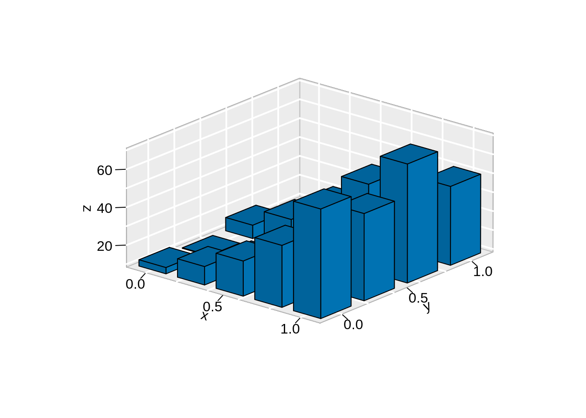

Chapter 36 3D plot in R
Xinzhe Qi
If using rgl library for interative plots, we need to set up options to display the graph inside html.
36.1 Introduction
Usually, we tend to use 2-D graphs for data visualization. However, sometimes we do want to show the spatial relationship in 3-D. As a result, it would be helpful for some to use 3-D visuals in R. This post will explore these methods in R.
36.2 Static 3D Plots
36.2.1 3D scatterplot
x = sep.l <- iris$Sepal.Length
y = pet.l <- iris$Petal.Length
z = sep.w <- iris$Sepal.Width
scatter3D(x = sep.l,
y = pet.l,
z = sep.w, # define x, y, z axes
clab = c("Sepal", "Width (cm)") # clab is used to change the title of the color legend.
) 
36.2.1.1 Change background
“f”: full box
“b”: default value. Only the back panels are visible
“b2”: back panels and grid lines are visible
“g”: grey background with white grid lines
“bl”: black background
“bl2”: black background with grey lines
“u”: means that the user will specify the arguments col.axis, col.panel, lwd.panel, col.grid, lwd.grid manually
“n”: no box will be drawn. This is the same as setting box = FALSE


36.2.2 3D texts
We can put texts into a 3D space using text3D. This text in the graph shows the state name, with dimensions of Rape, Murder, and Assault. The color of each name indicates the population of each state.
data(USArrests)
with(USArrests,
text3D(Murder, Assault, Rape,
labels = rownames(USArrests),
colvar = UrbanPop, # add columns
col = gg.col(100),
theta = 60, phi = 20,
xlab = "Murder", ylab = "Assault", zlab = "Rape",
main = "USA arrests", cex = 0.6,
bty = "g", # background
ticktype = "detailed", # axis tick type
d = 2,
clab = c("Urban","Pop"), adj = 0.5, font = 2))
We can even add points and columns into the text graph. “The adj parameter determines the position of the text relative to the specified coordinate. Use adj = c(0, 0) to place the left bottom corner at (x, y, z), adj = c(0.5, 0.5) to center the text there, and adj = c(1, 1) to put the right top corner there. The optional second coordinate for vertical adjustment defaults to 0.5. Placement is done using the”advance" of the string and the “ascent” of the font relative to the baseline, when these metrics are known."
# Plot texts
with(USArrests,
text3D(Murder, Assault, Rape,
labels = rownames(USArrests),
colvar = UrbanPop,
col = gg.col(100),
theta = 60, phi = 20,
xlab = "Murder", ylab = "Assault", zlab = "Rape",
main = "USA arrests", cex = 0.6,
bty = "g", ticktype = "detailed", d = 2,
clab = c("Urban","Pop"), adj = 0.5, font = 2))
# Add points
with(USArrests,
scatter3D(Murder, Assault, Rape - 1,
colvar = UrbanPop, col = gg.col(100),
type = "h", pch = ".", add = TRUE))
36.2.3 3D Histogram
Here we can plot a 3-D histogram. This example visualizes the matrix, where the heights represent the number of deaths.
data(VADeaths)
hist3D(z = VADeaths, scale = FALSE, expand = 0.01,
bty = "g", phi = 20,
col = "#0072B2", border = "black",
shade = 0.2, ltheta = 90,
space = 0.3, ticktype = "detailed", d = 2)
36.3 Interactive 3D Plots
36.3.1 rgl library
data <- iris
# Add a new column with color
mycolors <- c('royalblue1', 'darkcyan', 'oldlace')
data$color <- mycolors[ as.numeric(data$Species) ]
plot3d(
x=data$`Sepal.Length`, y=data$`Sepal.Width`, z=data$`Petal.Length`,
col = data$color,
type = 's',
radius = .1,
xlab="Sepal Length", ylab="Sepal Width", zlab="Petal Length")
rglwidget()36.3.2 plotly library
Other than rgl, we can also draw an interative scatter plot, using plotly.
36.3.2.1 3D Scatter Plot
mtcars$am[which(mtcars$am == 0)] <- 'Automatic'
mtcars$am[which(mtcars$am == 1)] <- 'Manual'
mtcars$am <- as.factor(mtcars$am)
fig <- plot_ly(mtcars, x = ~wt, y = ~hp, z = ~qsec,
color = ~am, # define color on param
colors = c('#BF382A', '#0C4B8E'))
fig <- fig %>% add_markers()
fig <- fig %>% layout(scene = list(xaxis = list(title = 'Weight'),
yaxis = list(title = 'Gross horsepower'),
zaxis = list(title = '1/4 mile time')))
fig36.4 Conclusion
If we only need to plot a static 3D graph, library plot3D is pretty easy to use. For interative plots, rgl and plotly are great choices. There are also line plots and surface plots in plotly library, but since they are not very frequently-used, they’re not included in this tutorial.